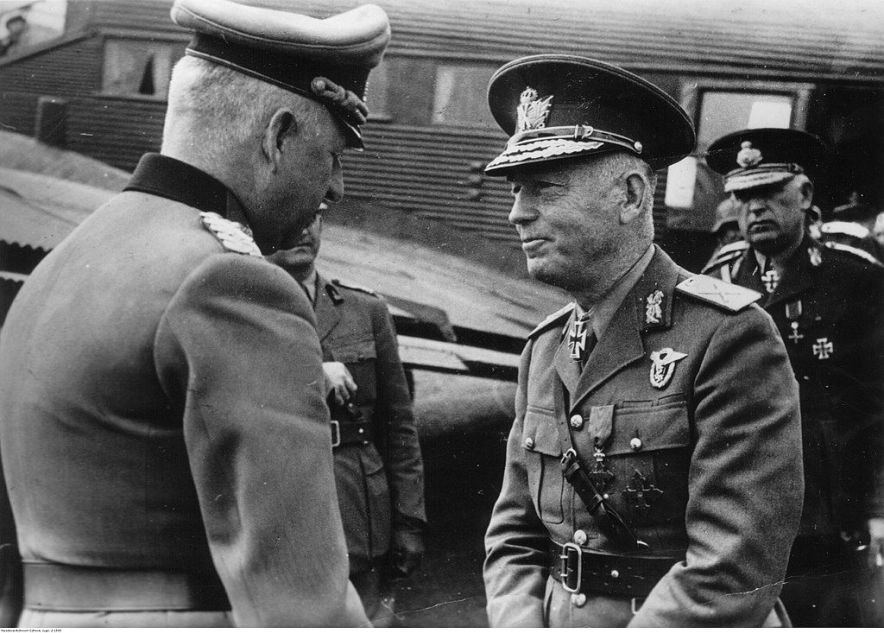

Introduction
Ion Antonescu was a Romanian military leader and politician who served as the Prime Minister and Conducător (leader) of Romania during World War II. He is known for his role in leading Romania into the Axis Powers and his controversial decisions during the war. His collaboration with Nazi Germany and involvement in the Holocaust remain subjects of significant historical debate.
Key Achievements of Ion Antonescu
- Served as Prime Minister and Conducător of Romania from 1940 to 1944.
- Allied Romania with Nazi Germany during World War II, participating in the invasion of the Soviet Union in 1941.
- Played a significant role in the deportation and mass killing of Jews and Roma in Romania and territories under its control during the war.
- Facilitated Romania's participation in key battles on the Eastern Front, including the Battle of Stalingrad.
Important Events During Antonescu’s Leadership
- 1940: Antonescu became Prime Minister of Romania following a coup, initially working to strengthen Romania’s ties with Nazi Germany.
- 1941: Joined the Axis Powers and participated in Operation Barbarossa, the German invasion of the Soviet Union.
- 1941: Led Romania in the invasion of Bessarabia and the Ukrainian territories, which led to the mass deportation and execution of Jews and Roma.
- 1944: Antonescu was removed from power after Romania switched sides to the Allies during the war, marking the collapse of his regime.
- 1946: Antonescu was tried by the Romanian People's Tribunal, convicted of war crimes, and executed.
Learn More
For more detailed information about Ion Antonescu, you can visit this Wikipedia page.
